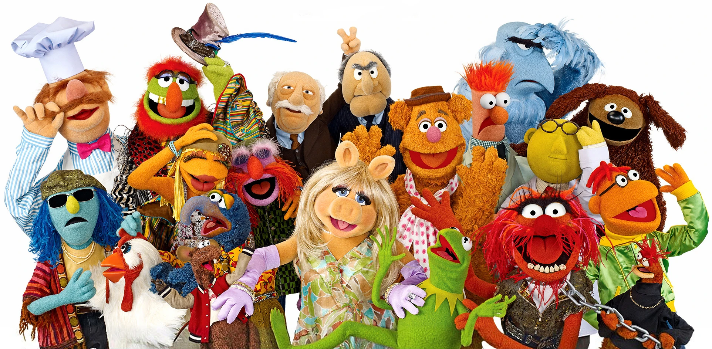

| The Muppets!! |
| Characters | Movies |
|
Created in 1955 by Jim Henson, The Muppets are an ensemble cast of puppets. The franchise includes 8 movies, 13 series, and 27 TV specials, though they often make guest appearances in other shows. There are over 3,500 Muppet characters in existence. |
|  |